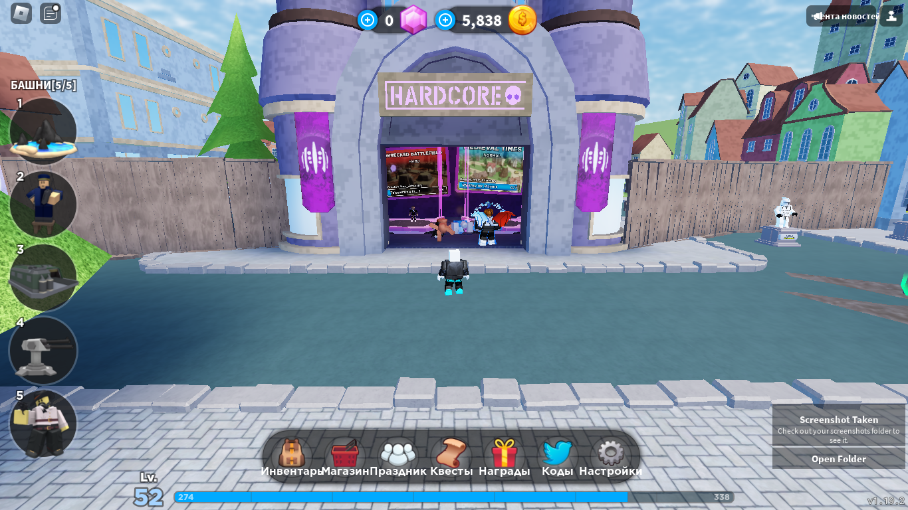

Tower Defense Simulator - плейс , створений групою Paradoxum Games . Плейс відомий як один із найкращих симуляторів у Роблоксі . Цей плейс був нагороджений премією 8th Annual Bloxy Awards: Кращий трейлер плейсу. Смисл плейсу в тому щоб самому або з друзями обороняти свою базу від зомбаків. Всього є від 30 до 40 волн зомбі в завісімості від сложності яку обрали в самому початку. На останій волні буде босс і коли його уб'ють ви отримаєте якусь кількість монет за які можна купити нові башні.
У Tower Defense Simulator є кілька видів ігрових режимів Виживання на чотирьох. - Має 6 кімнат-лобі, карти яких змінюються, коли в кімнатах нікого немає.

Хардкор на чотирьох:
-Має всього 2 кімнати до чотирьох гравців
-Ціна на прокачку та на башні на 20% більше ніж у звичайному режимі.
-Має ускладнених мобів та босів
-При закінчуванні гри можна получіть не тількі монети,а щей діаманти за які можна куплять круті башні
Особий режим на чотирьох:
-Має 3 кімнати до чотирьох гравців
-Має унікальних та складних зомбі з босами
-Після перемоги над босами режиму дається змога придбати нові башні